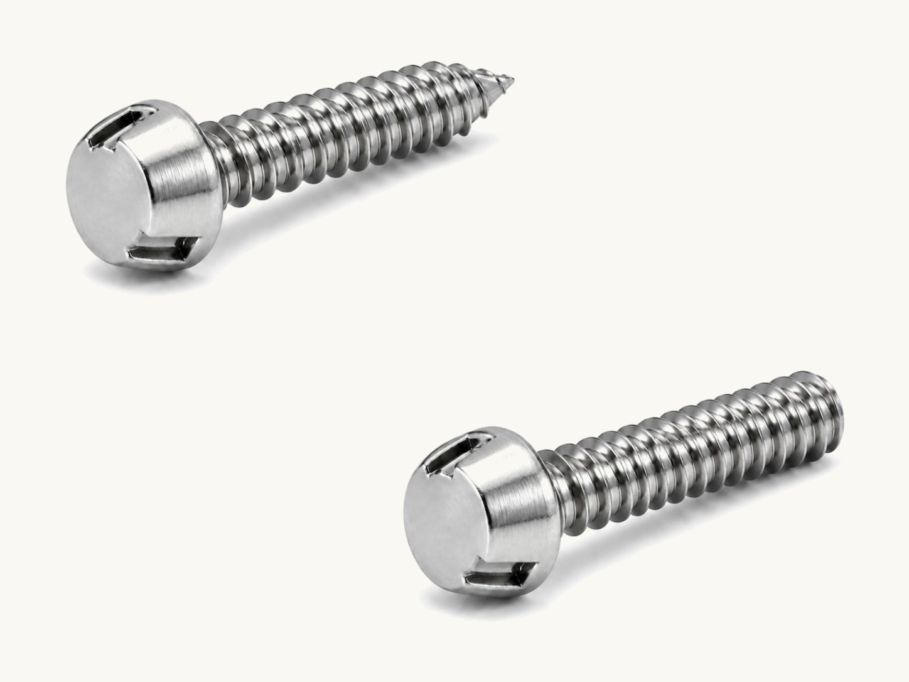

Tri-Groove Security Screws
Tri-Groove screws have rounded external heads with three engagement grooves. A matching security socket supports installation and authorized removal. Browse the catalog-listed zinc-plated steel machine and sheet-metal screws below.

Sizes & part numbers
Select a part number to start a quote. Catalog listings are reference configurations; availability is confirmed with your inquiry.
Tri-Groove machine screws - steel, zinc plated (30)
| Part number | Thread size | Length (in.) |
|---|---|---|
| TR6C037SZ#6-32 × 3/8″ Tri-Groove Machine Screw, Steel, Zinc Plated | #6-32 | 3/8 |
| TR6C050SZ#6-32 × 1/2″ Tri-Groove Machine Screw, Steel, Zinc Plated | #6-32 | 1/2 |
| TR6C062SZ#6-32 × 5/8″ Tri-Groove Machine Screw, Steel, Zinc Plated | #6-32 | 5/8 |
| TR6C075SZ#6-32 × 3/4″ Tri-Groove Machine Screw, Steel, Zinc Plated | #6-32 | 3/4 |
| TR8C037SZ#8-32 × 3/8″ Tri-Groove Machine Screw, Steel, Zinc Plated | #8-32 | 3/8 |
| TR8C050SZ#8-32 × 1/2″ Tri-Groove Machine Screw, Steel, Zinc Plated | #8-32 | 1/2 |
| TR8C062SZ#8-32 × 5/8″ Tri-Groove Machine Screw, Steel, Zinc Plated | #8-32 | 5/8 |
| TR8C075SZ#8-32 × 3/4″ Tri-Groove Machine Screw, Steel, Zinc Plated | #8-32 | 3/4 |
| TR8C100SZ#8-32 × 1″ Tri-Groove Machine Screw, Steel, Zinc Plated | #8-32 | 1 |
| TR8C125SZ#8-32 × 1-1/4″ Tri-Groove Machine Screw, Steel, Zinc Plated | #8-32 | 1-1/4 |
| TR8C150SZ#8-32 × 1-1/2″ Tri-Groove Machine Screw, Steel, Zinc Plated | #8-32 | 1-1/2 |
| TR10C037SZ#10-24 × 3/8″ Tri-Groove Machine Screw, Steel, Zinc Plated | #10-24 | 3/8 |
| TR10C050SZ#10-24 × 1/2″ Tri-Groove Machine Screw, Steel, Zinc Plated | #10-24 | 1/2 |
| TR10C062SZ#10-24 × 5/8″ Tri-Groove Machine Screw, Steel, Zinc Plated | #10-24 | 5/8 |
| TR10C100SZ#10-24 × 1″ Tri-Groove Machine Screw, Steel, Zinc Plated | #10-24 | 1 |
| TR10C125SZ#10-24 × 1-1/4″ Tri-Groove Machine Screw, Steel, Zinc Plated | #10-24 | 1-1/4 |
| TR10C150SZ#10-24 × 1-1/2″ Tri-Groove Machine Screw, Steel, Zinc Plated | #10-24 | 1-1/2 |
| TR10F037SZ#10-32 × 3/8″ Tri-Groove Machine Screw, Steel, Zinc Plated | #10-32 | 3/8 |
| TR10F050SZ#10-32 × 1/2″ Tri-Groove Machine Screw, Steel, Zinc Plated | #10-32 | 1/2 |
| TR10F062SZ#10-32 × 5/8″ Tri-Groove Machine Screw, Steel, Zinc Plated | #10-32 | 5/8 |
| TR10F100SZ#10-32 × 1″ Tri-Groove Machine Screw, Steel, Zinc Plated | #10-32 | 1 |
| TR10F125SZ#10-32 × 1-1/4″ Tri-Groove Machine Screw, Steel, Zinc Plated | #10-32 | 1-1/4 |
| TR10F150SZ#10-32 × 1-1/2″ Tri-Groove Machine Screw, Steel, Zinc Plated | #10-32 | 1-1/2 |
| TR25C050SZ1/4-20 × 1/2″ Tri-Groove Machine Screw, Steel, Zinc Plated | 1/4-20 | 1/2 |
| TR25C062SZ1/4-20 × 5/8″ Tri-Groove Machine Screw, Steel, Zinc Plated | 1/4-20 | 5/8 |
| TR25C075SZ1/4-20 × 3/4″ Tri-Groove Machine Screw, Steel, Zinc Plated | 1/4-20 | 3/4 |
| TR25C100SZ1/4-20 × 1″ Tri-Groove Machine Screw, Steel, Zinc Plated | 1/4-20 | 1 |
| TR25C150SZ1/4-20 × 1-1/2″ Tri-Groove Machine Screw, Steel, Zinc Plated | 1/4-20 | 1-1/2 |
| TR25C200SZ1/4-20 × 2″ Tri-Groove Machine Screw, Steel, Zinc Plated | 1/4-20 | 2 |
| TR25C250SZ1/4-20 × 2-1/2″ Tri-Groove Machine Screw, Steel, Zinc Plated | 1/4-20 | 2-1/2 |
Source: Screw & Supply catalog, page 29. Confirm current availability and exact configuration when ordering.
Tri-Groove sheet-metal screws - steel, zinc plated (21)
| Part number | Screw size | Length (in.) |
|---|---|---|
| TR6X050SZ#6 × 1/2″ Tri-Groove Sheet-Metal Screw, Steel, Zinc Plated | #6 | 1/2 |
| TR6X075SZ#6 × 3/4″ Tri-Groove Sheet-Metal Screw, Steel, Zinc Plated | #6 | 3/4 |
| TR6X100SZ#6 × 1″ Tri-Groove Sheet-Metal Screw, Steel, Zinc Plated | #6 | 1 |
| TR8X050SZ#8 × 1/2″ Tri-Groove Sheet-Metal Screw, Steel, Zinc Plated | #8 | 1/2 |
| TR8X075SZ#8 × 3/4″ Tri-Groove Sheet-Metal Screw, Steel, Zinc Plated | #8 | 3/4 |
| TR8X100SZ#8 × 1″ Tri-Groove Sheet-Metal Screw, Steel, Zinc Plated | #8 | 1 |
| TR8X150SZ#8 × 1-1/2″ Tri-Groove Sheet-Metal Screw, Steel, Zinc Plated | #8 | 1-1/2 |
| TR10X050SZ#10 × 1/2″ Tri-Groove Sheet-Metal Screw, Steel, Zinc Plated | #10 | 1/2 |
| TR10X075SZ#10 × 3/4″ Tri-Groove Sheet-Metal Screw, Steel, Zinc Plated | #10 | 3/4 |
| TR10X100SZ#10 × 1″ Tri-Groove Sheet-Metal Screw, Steel, Zinc Plated | #10 | 1 |
| TR10X125SZ#10 × 1-1/4″ Tri-Groove Sheet-Metal Screw, Steel, Zinc Plated | #10 | 1-1/4 |
| TR10X150SZ#10 × 1-1/2″ Tri-Groove Sheet-Metal Screw, Steel, Zinc Plated | #10 | 1-1/2 |
| TR10X200SZ#10 × 2″ Tri-Groove Sheet-Metal Screw, Steel, Zinc Plated | #10 | 2 |
| TR12X075SZ#12 × 3/4″ Tri-Groove Sheet-Metal Screw, Steel, Zinc Plated | #12 | 3/4 |
| TR12X100SZ#12 × 1″ Tri-Groove Sheet-Metal Screw, Steel, Zinc Plated | #12 | 1 |
| TR12X125SZ#12 × 1-1/4″ Tri-Groove Sheet-Metal Screw, Steel, Zinc Plated | #12 | 1-1/4 |
| TR12X150SZ#12 × 1-1/2″ Tri-Groove Sheet-Metal Screw, Steel, Zinc Plated | #12 | 1-1/2 |
| TR25X075SZ#14 × 3/4″ Tri-Groove Sheet-Metal Screw, Steel, Zinc Plated | #14 | 3/4 |
| TR25X100SZ#14 × 1″ Tri-Groove Sheet-Metal Screw, Steel, Zinc Plated | #14 | 1 |
| TR25X125SZ#14 × 1-1/4″ Tri-Groove Sheet-Metal Screw, Steel, Zinc Plated | #14 | 1-1/4 |
| TR25X150SZ#14 × 1-1/2″ Tri-Groove Sheet-Metal Screw, Steel, Zinc Plated | #14 | 1-1/2 |
Source: Screw & Supply catalog, page 29. Confirm current availability and exact configuration when ordering.
Common questions
- Which socket fits a Tri-Groove screw?
- Use the Tri-Groove socket chart to select by screw size, then confirm the fastener series and head profile. Socket fit must be checked before ordering.
- Can a standard socket or wrench turn the head?
- A matching Tri-Groove socket provides the intended engagement. The rounded head discourages gripping with common tools, but the fastener is not removal-proof.
- How much clearance does the tool need?
- Allow room around and above the head for the socket to seat fully. Recesses or nearby components may prevent full engagement.
- Which material is shown in these tables?
- The catalog-listed configurations shown here are zinc-plated steel. Send other material requirements for review rather than assuming every size is offered in every material.
- Can you review custom sizes or materials?
- Yes. Send a drawing or sample information with the thread, length, head style, material, finish, quantity, and any documentation requirements. We offer custom-manufactured fasteners with competitive minimum order quantities.
Socket size chart Socket chart PDF
Match the socket to the Tri-Groove head
Tri-Groove Sockets →
Matching sockets, and socket-and-handle sets where available, sized to our Tri-Groove head series.
Drive Guide →
Compare Tri-Groove against our other security drive systems to confirm it fits your job.
Request a Quote →
Tell us your head series and application so we can confirm socket compatibility.
Where limited tool access matters
- Detention & Institutional →
Used on institutional fixtures and hardware requiring controlled access.
- Utility & Infrastructure →
Secures utility enclosures and outdoor fixtures.
- Transit, Rail & Signage →
Holds transit hardware and signage exposed to public contact.
- Machinery Guarding & Panels →
Keeps equipment guards and panels from casual removal.
- Amusement & Fitness Equipment →
Used on public-use equipment where tampering is a concern.
- Public Restrooms & Partitions →
Secures restroom fixtures and partitions in public spaces.